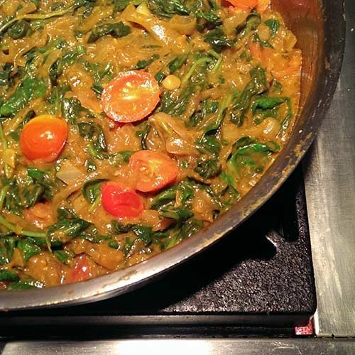
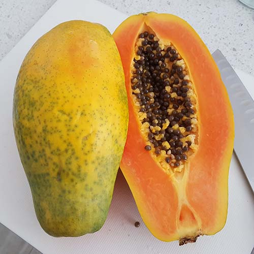
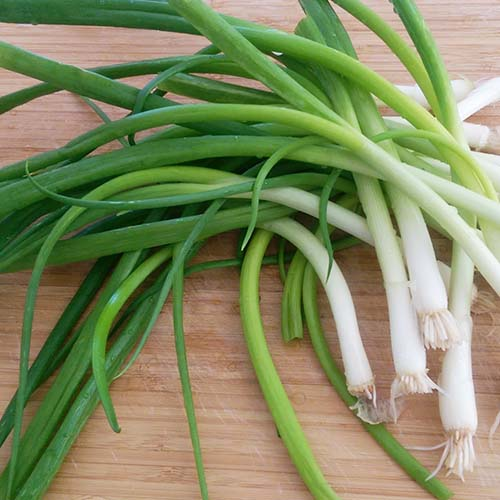
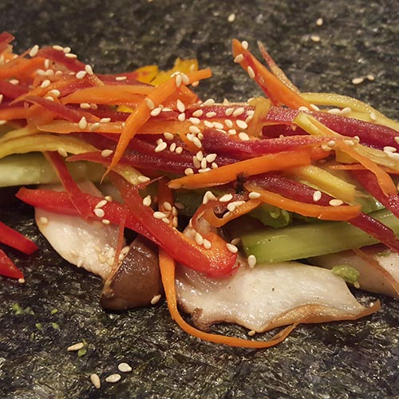
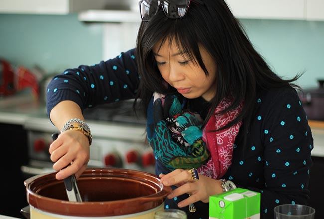
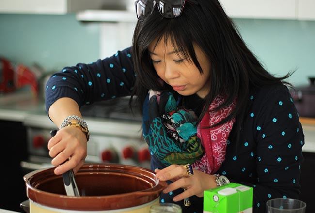
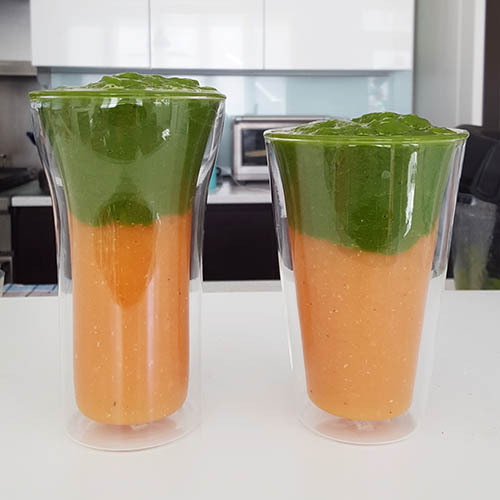
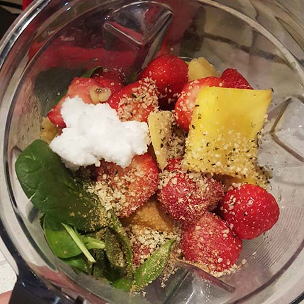
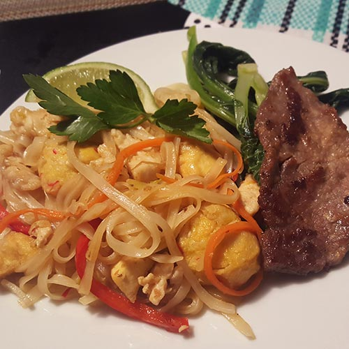

Love your food.
HOM Kitchen grew out of a love for home cooking and enjoying all the foods we love. Food is beautiful because it’s universal, like nothing else. The kitchen is the heart of the home. When you cook at home you are cooking from the heart. Food should always be healthy, tasty and make you smile.
Come Together.
In many cultures eating is about spending quality time with family and friends. Food has the power to bring people together. When we gather around the same table, we make friends, share culture and celebrate moments together.
 
 
Nourish your body.
Food is meant to nourish us. It can heal us when we are sick, give us energy, and fuel our active pursuits. By consuming nutrient dense, real, whole foods, we nourish and heal our bodies from the inside out. The truth is that when we give our bodies the right fuel, we don’t feel hungry or guilt. Instead, we thrive and feel amazing!
 

Meet Estella Hom
Graphic designer, kettlebell lifter, Hom Kitchen chef, and foodie. Estella was an 80’s child growing up in Downtown Toronto’s Chinatown scene, surrounded by tons of fresh produce and delicious restaurant food. Having spent most of her early childhood years hanging in her grandparents’ Chinese restaurant and sous chef to her parents while growing up, these experiences lead to a lifelong passion for food and cooking (and of course eating!).
“The kitchen has always been my favorite room in the house. It is my happy place where I can easily spend hours on end making food and not realizing how many hours had passed.”
After struggling with eczema skin flare ups and being overweight for years, Estella decided to finally change her diet and lifestyle. Having tried everything from steroid creams, antihistamine medicines, every skincare product, to allergy tests, only to have the problems relapse, it always came back to food. By cutting out the foods that were causing inflammation and embracing a diet filled with healthy, nutrient-packed whole foods, her skin cleared up, digestion improved, energy increased, lost weight, and she has never looked back. She realized the importance of the food we put into our bodies and how it affects how we look and feel each day.
“Let food be thy medicine and medicine be thy food.” ― Hippocrates
Estella’s goal is to inspire, educate and teach the world how to enjoy delicious meals while fueling and healing the body from within to live a long, healthy life.
Culinary Events
For a limited time, Estella will be teaching workshops at Williams Sonoma on Bloor St. This is a limited time engagement, so reserve your spot and take advantage of this amazing opportunity!
Each workshop includes a cooking demonstration, samples of featured dishes, and take home recipes. Enjoy a 10% savings on select same-day store purchases.
Green Power
Smoothie Workshop
 
Ready to load your body with some amazing nutrients? Add more greens to your diet and achieve extraordinary health and wellness by drinking one green smoothie a day, without changing anything else. Discover the health-boosting benefits to jump-start your weight loss, increase energy levels, clear your mind, and improve overall health. Everyone from athletes to weekend warriors, to desk jockeys can benefit from this!
What you will learn:
- How drinking green smoothies can heal you from the inside out
- The perfect formula to make great tasting smoothies every time
- How to boost immune and digestive system function
- How to make quick and easy smoothies
- Superfoods that will up your smoothie game
What you will get:
- A shopping list of ingredients and recipe ideas
- Green smoothie samples
You will leave this workshop inspired and equipped with all the knowledge and tools you need to start making your own smoothies.
Saturday August 6, 2016 | 10:00am – 12pm
Glow from Within
Cooking Workshop

Discover a long term solution to staying healthy. Estella will teach you how to prepare simple, delicious, healthy meals and feel satisfied. Cook with variety so you never get tired of eating the same thing. Learn to break unhealthy habits, reduce cravings, improve digestion, and strengthen your immune system while enjoying effortless weight loss, improved sleep quality, and improved health.
What you will learn:
- What foods cause inflammation
- How to identify food allergies and triggers
- Why you should eat or eliminate certain foods
- How to swap in healthy alternatives to satisfy common cravings
- Build confidence and inspire your taste buds
- To reduce cravings and never feel hungry again
What you will get:
- A cooking demo of Estella’s top meals for a busy schedule
- Basic nutrition guidelines to follow
- A list of foods you should eat, limit, and avoid
Saturday August 13, 2016 | 10:00am – 12pm